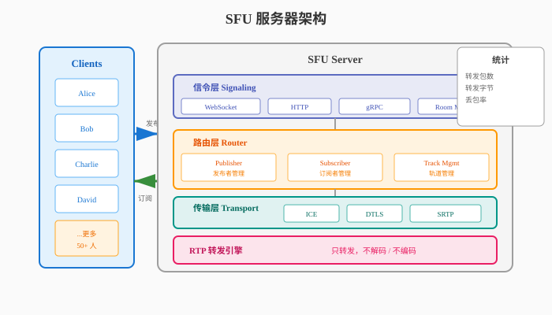
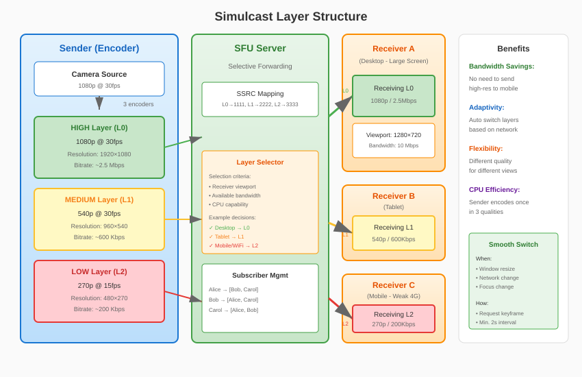

音视频开发实战
第22章：SFU 转发服务器
本章目标：理解 SFU 架构原理，掌握多人实时通信的服务器端技术。
在上一章（第21章）中，我们使用 WebRTC Native API 实现了 1v1 连麦客户端。P2P 连接在两人通信时非常高效，但当参与者超过两人时，纯 P2P 架构会遇到严重的可扩展性问题。
本章将学习 SFU（Selective Forwarding Unit，选择性转发单元） 架构，这是现代多人视频会议的核心技术。通过 SFU，我们可以支持数十人甚至上百人同时参与的实时音视频通话。
学习本章后，你将能够： - 理解 P2P 的局限性，掌握 SFU vs MCU 的技术选型 - 设计 Publish/Subscribe 媒体转发模型 - 实现 Simulcast 多路质量转发 - 理解 GCC 拥塞控制算法 - 编写一个简单的 SFU 服务器
目录
1. 为什么需要 SFU？
1.1 P2P 的局限性
当通话人数超过两人时，纯 P2P 架构面临三个严重问题：
问题 1：上传带宽爆炸
每个参与者需要向其他所有参与者发送媒体流：
┌─────────────────────────────────────────────────────────────┐
│ 3 人 P2P 通话 │
├─────────────────────────────────────────────────────────────┤
│ │
│ ┌─────────┐ │
│ │ Alice │ │
│ │ 2 Mbps │ │
│ └────┬────┘ │
│ │ │
│ ┌─────────┼─────────┐ │
│ ↓ ↓ ↓ │
│ ┌─────────┐ ┌─────────┐ ┌─────────┐ │
│ │ Bob │ │ Charlie │ │ Alice │ │
│ └─────────┘ └─────────┘ └─────────┘ │
│ │
│ Alice 的上行: 2 Mbps × 2 = 4 Mbps (发给 Bob 和 Charlie) │
│ 总带宽消耗: 每个人 4 Mbps 上行 + 4 Mbps 下行 = 8 Mbps │
└─────────────────────────────────────────────────────────────┘对于 N 人通话，每个参与者需要： - 上行带宽：(N-1) × 个人码率 - 下行带宽：(N-1) × 个人码率
| 人数 | 每人上行 (1080p@2Mbps) | 每人下行 | 总带宽/人 |
|---|---|---|---|
| 2 | 2 Mbps | 2 Mbps | 4 Mbps |
| 4 | 6 Mbps | 6 Mbps | 12 Mbps |
| 8 | 14 Mbps | 14 Mbps | 28 Mbps |
| 16 | 30 Mbps | 30 Mbps | 60 Mbps |
普通家庭宽带（通常 20-100 Mbps）难以支持 4 人以上的高清通话。
问题 2：设备性能瓶颈
每个参与者需要： - 编码 N-1 路视频（发给其他人） - 解码 N-1 路视频（接收其他人）
对于 4 人 1080p@30fps 通话，设备需要同时： - 编码 3 路 1080p - 解码 3 路 1080p
这对移动设备是巨大负担，发热、掉帧、卡顿随之而来。
问题 3：连接可靠性
P2P 需要建立 N×(N-1)/2 条连接： - 4 人通话：6 条连接 - 8 人通话：28 条连接 - 16 人通话：120 条连接
任何一条连接失败都会影响通信质量。
1.2 SFU vs MCU vs Mesh

Mesh（网状，纯 P2P）：
A ←──→ B
↑ ↘ ↑
└──→ C ←─┘- 优点：服务器不参与媒体处理，隐私性好
- 缺点：带宽和 CPU 消耗随人数平方增长
- 适用：2-3 人小规模通话
MCU（Multipoint Control Unit）：
┌─────────────┐
A ──→│ Server │──→ A看到B+C的合屏
B ──→│ (Mixing) │──→ B看到A+C的合屏
C ──→│ 合成一路 │──→ C看到A+B的合屏
└─────────────┘- 优点：客户端消耗最小，只收 1 路
- 缺点：服务器 CPU 消耗大（需要解码+合成+编码），延迟高（100-500ms）
- 适用：Webinar（ webinar 只需看主讲人），大规模直播
SFU（Selective Forwarding Unit）：
┌─────────────┐
A ──→│ Server │──→ 转发 B 给 A
B ──→│ (Routing) │──→ 转发 C 给 A
C ──→│ 只转发不处理 │──→ 转发 A 给 B/C
└─────────────┘- 优点：服务器只转发不处理，延迟低（10-50ms），灵活控制订阅
- 缺点：客户端需要解码多路，带宽消耗中等
- 适用：多人视频会议（4-50 人）
1.3 三种架构对比
| 特性 | Mesh (P2P) | MCU | SFU |
|---|---|---|---|
| 服务器角色 | 仅信令 | 混音合成 | 转发 |
| 服务器 CPU | 低 | 极高 | 低 |
| 服务器带宽 | 低 | 中等 | 高 |
| 客户端上行 | 高 | 低 | 低 |
| 客户端下行 | 高 | 极低 | 中等 |
| 客户端 CPU | 高 | 极低 | 中等 |
| 延迟 | 低 | 高 | 低 |
| 布局灵活性 | 高 | 低 | 高 |
| 最大人数 | 3-4 | 100+ | 50+ |
现代会议系统的主流选择：SFU 为主，MCU 为辅（用于录制或超大会议室）。
2. SFU 架构设计
2.1 整体架构

┌─────────────────────────────────────────────────────────────────┐
│ SFU Server │
│ ┌─────────────────────────────────────────────────────────┐ │
│ │ Signaling Layer │ │
│ │ (WebSocket / HTTP / gRPC - Room Management) │ │
│ └─────────────────────────────────────────────────────────┘ │
│ ↓ │
│ ┌─────────────────────────────────────────────────────────┐ │
│ │ Router Layer │ │
│ │ (Track Management - Publisher/Subscriber Model) │ │
│ └─────────────────────────────────────────────────────────┘ │
│ ↓ │
│ ┌─────────────────────────────────────────────────────────┐ │
│ │ Transport Layer │ │
│ │ (ICE/DTLS/SRTP - Per-participant PeerConnection) │ │
│ └─────────────────────────────────────────────────────────┘ │
│ ↓ │
│ ┌─────────────────────────────────────────────────────────┐ │
│ │ RTP Routing Engine │ │
│ │ (Packet Forwarding - No Decoding/Encoding) │ │
│ └─────────────────────────────────────────────────────────┘ │
└─────────────────────────────────────────────────────────────────┘
↑↓
┌───────────┐
│ Clients │
└───────────┘2.2 Publish/Subscribe 模型
SFU 采用 发布/订阅 模式管理媒体流：
namespace live {
// 发布者：向 SFU 发送媒体
class Publisher {
public:
// 发布音频轨道
void PublishAudio(const std::string& track_id,
std::shared_ptr<RtpSender> sender);
// 发布视频轨道（支持 Simulcast）
void PublishVideo(const std::string& track_id,
const std::vector<RtpSender>& simulcast_senders);
// 停止发布
void Unpublish(const std::string& track_id);
};
// 订阅者：从 SFU 接收媒体
class Subscriber {
public:
// 订阅某人的音频
void SubscribeAudio(const std::string& publisher_id,
const std::string& track_id);
// 订阅某人的视频（指定质量层）
void SubscribeVideo(const std::string& publisher_id,
const std::string& track_id,
VideoQualityLayer layer);
// 取消订阅
void Unsubscribe(const std::string& publisher_id,
const std::string& track_id);
};
} // namespace live关键设计决策： 1. 每个参与者维护一个 PeerConnection 与 SFU 通信 2. 上行（Publish）：发送者将自己的音视频推送到 SFU 3. 下行（Subscribe）：接收者从 SFU 拉取其他人的音视频 4. SFU 不解码媒体：只解析 RTP 头部，根据 SSRC 路由
2.3 RTP 路由引擎
namespace live {
// RTP 包路由表条目
struct RoutingEntry {
uint32_t ssrc; // 源 SSRC
std::string publisher_id; // 发布者 ID
std::string track_id; // 轨道 ID
VideoQualityLayer layer; // 质量层（用于 Simulcast）
std::vector<std::string> subscribers; // 订阅者列表
};
// RTP 路由器
class RtpRouter {
public:
// 注册发布流
void RegisterPublisher(const std::string& publisher_id,
const std::string& track_id,
uint32_t ssrc);
// 添加订阅关系
void AddSubscription(uint32_t ssrc, const std::string& subscriber_id);
void RemoveSubscription(uint32_t ssrc, const std::string& subscriber_id);
// 路由 RTP 包（核心转发逻辑）
void RouteRtpPacket(const std::string& publisher_id,
const uint8_t* rtp_packet,
size_t len);
// 处理 RTCP（反馈控制）
void ProcessRtcpPacket(const std::string& subscriber_id,
const uint8_t* rtcp_packet,
size_t len);
private:
// SSRC → 路由条目
std::unordered_map<uint32_t, RoutingEntry> routing_table_;
// Subscriber ID → PeerConnection
std::unordered_map<std::string, std::shared_ptr<PeerConnection>> subscribers_;
// 转发统计
struct ForwardStats {
uint64_t packets_forwarded = 0;
uint64_t bytes_forwarded = 0;
uint64_t packets_dropped = 0;
};
std::unordered_map<uint32_t, ForwardStats> stats_;
};
} // namespace live2.4 房间管理
namespace live {
// 参与者信息
struct Participant {
std::string id;
std::string name;
bool audio_muted = false;
bool video_muted = false;
std::shared_ptr<PeerConnection> pc;
// 发布的轨道
std::unordered_map<std::string, std::shared_ptr<MediaStreamTrack>> published_tracks;
// 订阅的轨道
std::unordered_set<std::string> subscribed_tracks;
};
// 房间
class Room {
public:
Room(const std::string& room_id, size_t max_participants = 50);
// 参与者管理
bool Join(const std::string& participant_id,
std::shared_ptr<PeerConnection> pc);
void Leave(const std::string& participant_id);
// 发布/订阅管理
void PublishTrack(const std::string& participant_id,
const std::string& track_id,
std::shared_ptr<MediaStreamTrack> track);
void UnpublishTrack(const std::string& participant_id,
const std::string& track_id);
void SubscribeTrack(const std::string& subscriber_id,
const std::string& publisher_id,
const std::string& track_id);
void UnsubscribeTrack(const std::string& subscriber_id,
const std::string& publisher_id,
const std::string& track_id);
// 获取房间信息
size_t GetParticipantCount() const;
std::vector<std::string> GetParticipantList() const;
// 广播控制消息
void BroadcastMessage(const std::string& from,
const json& message);
private:
std::string room_id_;
size_t max_participants_;
std::unordered_map<std::string, std::unique_ptr<Participant>> participants_;
std::shared_mutex mutex_;
// RTP 路由器
std::unique_ptr<RtpRouter> router_;
};
// 房间管理器
class RoomManager {
public:
std::shared_ptr<Room> CreateRoom(const std::string& room_id);
void DestroyRoom(const std::string& room_id);
std::shared_ptr<Room> GetRoom(const std::string& room_id);
private:
std::unordered_map<std::string, std::shared_ptr<Room>> rooms_;
std::mutex mutex_;
};
} // namespace live3. Simulcast 多路质量
3.1 为什么需要 Simulcast？
在多人会议中，不同参与者有不同的： - 屏幕尺寸：手机小屏 vs 电脑大屏 - 网络条件：WiFi vs 4G vs 弱网 - 关注重点：主讲人大窗口 vs 其他人小窗口
Simulcast（多播） 让发送者同时发送多路不同质量的视频：
发送者 (Alice)
│
├─→ 高清层 (1080p @ 2Mbps) ──→ 大屏显示、主讲人
├─→ 标清层 (540p @ 500Kbps) ──→ 中等窗口
└─→ 低清层 (270p @ 150Kbps) ──→ 小窗口、弱网用户3.2 Simulcast 分层结构

namespace live {
// 视频质量层
enum class VideoQualityLayer {
HIGH, // 高清 (1080p)
MEDIUM, // 标清 (540p)
LOW // 低清 (270p)
};
// Simulcast 配置
struct SimulcastConfig {
bool enabled = true;
struct LayerConfig {
int width;
int height;
int max_framerate;
int max_bitrate_bps;
double scale_resolution_down_by;
};
std::array<LayerConfig, 3> layers = {{
// High layer (L0) - original resolution
{1920, 1080, 30, 2500000, 1.0},
// Medium layer (L1) - 1/2 resolution
{960, 540, 30, 600000, 2.0},
// Low layer (L2) - 1/4 resolution
{480, 270, 15, 200000, 4.0}
}};
};
// Simulcast 流管理
class SimulcastManager {
public:
// 解析 SSRC 对应的层
VideoQualityLayer GetLayerBySSRC(uint32_t ssrc) const;
// 为订阅者选择最佳层
VideoQualityLayer SelectOptimalLayer(
const std::string& subscriber_id,
int target_width,
int target_height,
int available_bandwidth_bps);
// 层切换（平滑过渡）
void SwitchLayer(const std::string& subscriber_id,
uint32_t from_ssrc,
uint32_t to_ssrc);
private:
// SSRC 到层的映射
std::unordered_map<uint32_t, VideoQualityLayer> ssrc_to_layer_;
// 当前订阅状态
struct SubscriptionState {
uint32_t current_ssrc;
VideoQualityLayer current_layer;
uint64_t switch_timestamp;
};
std::unordered_map<std::string, SubscriptionState> subscriptions_;
};
} // namespace live3.3 层选择策略
namespace live {
// 基于窗口大小的层选择
VideoQualityLayer SelectLayerByViewport(
int viewport_width,
int viewport_height,
const SimulcastConfig& config) {
// 根据显示区域大小选择最合适的层
// 避免过度采样（小窗口看高清是浪费）
if (viewport_width >= config.layers[0].width * 0.8 ||
viewport_height >= config.layers[0].height * 0.8) {
return VideoQualityLayer::HIGH;
}
if (viewport_width >= config.layers[1].width * 0.8 ||
viewport_height >= config.layers[1].height * 0.8) {
return VideoQualityLayer::MEDIUM;
}
return VideoQualityLayer::LOW;
}
// 基于带宽的层选择
VideoQualityLayer SelectLayerByBandwidth(
int available_bandwidth_bps,
const SimulcastConfig& config) {
// 预留 20% 缓冲
int safe_bandwidth = available_bandwidth_bps * 0.8;
if (safe_bandwidth >= config.layers[0].max_bitrate_bps) {
return VideoQualityLayer::HIGH;
}
if (safe_bandwidth >= config.layers[1].max_bitrate_bps) {
return VideoQualityLayer::MEDIUM;
}
return VideoQualityLayer::LOW;
}
// 综合选择（考虑窗口和带宽）
VideoQualityLayer SelectOptimalLayer(
int viewport_width,
int viewport_height,
int available_bandwidth_bps,
const SimulcastConfig& config) {
auto layer_by_viewport = SelectLayerByViewport(
viewport_width, viewport_height, config);
auto layer_by_bandwidth = SelectLayerByBandwidth(
available_bandwidth_bps, config);
// 取两者中较低的（受限因素决定）
return std::min(layer_by_viewport, layer_by_bandwidth);
}
} // namespace live3.4 平滑层切换
namespace live {
// 层切换管理器（防止频繁切换）
class LayerSwitchManager {
public:
static constexpr int64_t kMinSwitchIntervalMs = 2000; // 最少 2 秒切换一次
static constexpr int kQualityHysteresis = 10; // 10% 缓冲避免抖动
bool ShouldSwitchLayer(VideoQualityLayer current,
VideoQualityLayer proposed,
int64_t last_switch_time_ms,
int current_bandwidth_bps,
int proposed_layer_bitrate) {
int64_t now = GetCurrentTimeMs();
if (now - last_switch_time_ms < kMinSwitchIntervalMs) {
return false; // 切换太频繁
}
if (proposed > current) {
// 升层：需要足够带宽（+缓冲）
return current_bandwidth_bps > proposed_layer_bitrate * (100 + kQualityHysteresis) / 100;
} else if (proposed < current) {
// 降层：带宽不足（-缓冲）
return current_bandwidth_bps < proposed_layer_bitrate * (100 - kQualityHysteresis) / 100;
}
return false;
}
// 关键帧请求（切换后需要立即刷新）
void RequestKeyframe(uint32_t ssrc);
};
} // namespace live4. GCC 拥塞控制
4.1 为什么需要拥塞控制？
网络带宽是动态变化的： - WiFi 信号强弱变化 - 其他应用占用带宽 - 网络拥堵时段
拥塞控制的目标： 1. 充分利用可用带宽 2. 避免网络拥塞导致丢包 3. 快速适应带宽变化
4.2 GCC 算法概述
GCC（Google Congestion Control） 是 WebRTC 默认的拥塞控制算法，结合发送端和接收端估计：
┌─────────────────────────────────────────────────────────────┐
│ GCC 架构 │
├─────────────────────────────────────────────────────────────┤
│ │
│ 发送端 接收端 │
│ ┌──────────────┐ ┌──────────────┐ │
│ │ 发送码率控制 │ │ 延迟变化检测 │ │
│ │ (基于丢包) │ │ (基于到达时间)│ │
│ └──────┬───────┘ └──────┬───────┘ │
│ │ │ │
│ │ 带宽估计 ←─────────────┘ │
│ │ (通过 RTCP TransportCC) │
│ ↓ │
│ ┌──────────────┐ │
│ │ 最终目标码率 │ ← 取两者最小值 │
│ │ = min(丢包, │ │
│ │ 延迟) │ │
│ └──────┬───────┘ │
│ ↓ │
│ 编码器码率调整 │
└─────────────────────────────────────────────────────────────┘4.3 GCC 算法流程

发送端估计（基于丢包）：
namespace live {
// 发送端带宽估计器
class SendSideBandwidthEstimator {
public:
// 处理 RTCP Receiver Report
void OnReceiverReport(const ReceiverReport& report);
// 计算目标码率
int64_t GetTargetBitrateBps() const { return target_bitrate_bps_; }
private:
// 丢包率 → 码率调整
void UpdateTargetBitrate(float loss_rate);
static constexpr float kLossLowThreshold = 0.02f; // 2%
static constexpr float kLossHighThreshold = 0.10f; // 10%
// 码率调整规则：
// loss < 2%: 增加码率 (带宽充足)
// 2% < loss < 10%: 保持当前码率
// loss > 10%: 降低码率 (拥塞)
int64_t target_bitrate_bps_ = 1000000; // 初始 1 Mbps
float loss_rate_ = 0.0f;
};
void SendSideBandwidthEstimator::UpdateTargetBitrate(float loss_rate) {
if (loss_rate < kLossLowThreshold) {
// 丢包率低，增加码率
target_bitrate_bps_ = static_cast<int64_t>(
target_bitrate_bps_ * 1.05); // 增加 5%
} else if (loss_rate > kLossHighThreshold) {
// 丢包率高，降低码率
target_bitrate_bps_ = static_cast<int64_t>(
target_bitrate_bps_ * (1 - 0.5f * loss_rate));
}
// 否则保持当前码率
// 限制范围
target_bitrate_bps_ = std::clamp(target_bitrate_bps_,
kMinBitrateBps,
kMaxBitrateBps);
}
} // namespace live接收端估计（基于延迟）：
namespace live {
// 到达时间过滤器（卡尔曼滤波）
class ArrivalTimeFilter {
public:
// 处理包到达事件
void OnPacketArrival(int64_t send_time_ms,
int64_t arrival_time_ms,
size_t payload_size);
// 获取延迟变化趋势
double GetDelayTrend() const;
private:
// 卡尔曼滤波状态
double slope_; // 延迟变化斜率
double offset_; // 偏移
// 状态噪声协方差
double process_noise_cov_[2][2];
double measurement_noise_var_;
};
// 接收端带宽估计器
class ReceiveSideBandwidthEstimator {
public:
void OnReceivedPacket(const RtpPacket& packet,
int64_t arrival_time_ms);
// 生成 TransportCC 反馈（通过 RTCP）
std::vector<uint8_t> BuildTransportCcFeedback();
int64_t GetEstimatedBitrateBps() const;
private:
ArrivalTimeFilter arrival_filter_;
// 基于延迟趋势的码率调整
void UpdateEstimate(double delay_trend);
// 自适应阈值
double threshold_ = 12.5; // 初始阈值 (ms)
bool overusing_ = false;
int64_t estimated_bitrate_bps_ = 1000000;
};
void ReceiveSideBandwidthEstimator::UpdateEstimate(double delay_trend) {
if (delay_trend > threshold_) {
// 延迟增加，网络拥塞
if (!overusing_) {
overusing_ = true;
// 开始降速
estimated_bitrate_bps_ *= 0.85;
}
} else if (delay_trend < -threshold_) {
// 延迟减少，网络空闲
overusing_ = false;
// 可以提速
estimated_bitrate_bps_ *= 1.05;
} else {
overusing_ = false;
}
}
} // namespace live4.4 码率分配
namespace live {
// 码率分配器（处理多轨道）
class BitrateAllocator {
public:
struct TrackConfig {
std::string track_id;
int64_t min_bitrate_bps;
int64_t max_bitrate_bps;
int priority; // 优先级（音频 > 主讲人视频 > 其他视频）
};
// 分配码率给各个轨道
std::map<std::string, int64_t> Allocate(
int64_t total_bitrate_bps,
const std::vector<TrackConfig>& tracks);
private:
// 优先保证最低码率
// 剩余带宽按优先级分配
};
std::map<std::string, int64_t> BitrateAllocator::Allocate(
int64_t total_bitrate_bps,
const std::vector<TrackConfig>& tracks) {
std::map<std::string, int64_t> allocation;
int64_t remaining = total_bitrate_bps;
// 第一步：分配最低码率
for (const auto& track : tracks) {
int64_t allocated = std::min(track.min_bitrate_bps, remaining);
allocation[track.track_id] = allocated;
remaining -= allocated;
}
// 第二步：按优先级分配剩余带宽
if (remaining > 0) {
// 按优先级排序
auto sorted_tracks = tracks;
std::sort(sorted_tracks.begin(), sorted_tracks.end(),
[](const auto& a, const auto& b) {
return a.priority > b.priority;
});
for (const auto& track : sorted_tracks) {
int64_t current = allocation[track.track_id];
int64_t desired = track.max_bitrate_bps;
int64_t additional = std::min(desired - current, remaining);
allocation[track.track_id] += additional;
remaining -= additional;
if (remaining <= 0) break;
}
}
return allocation;
}
} // namespace live5. 简单 SFU 实现
5.1 项目结构
simple-sfu/
├── CMakeLists.txt
├── src/
│ ├── main.cpp
│ ├── sfu_server.{h,cpp}
│ ├── room.{h,cpp}
│ ├── rtp_router.{h,cpp}
│ ├── signaling_handler.{h,cpp}
│ └── bandwidth_controller.{h,cpp}
└── include/
└── live/
└── sfu/5.2 CMakeLists.txt
cmake_minimum_required(VERSION 3.16)
project(simple_sfu VERSION 1.0.0 LANGUAGES CXX)
set(CMAKE_CXX_STANDARD 14)
set(CMAKE_CXX_STANDARD_REQUIRED ON)
# 依赖
find_package(WebRTC REQUIRED)
find_package(Threads REQUIRED)
find_package(Boost REQUIRED COMPONENTS system)
# SFU 可执行文件
add_executable(simple_sfu
src/main.cpp
src/sfu_server.cpp
src/room.cpp
src/rtp_router.cpp
src/signaling_handler.cpp
src/bandwidth_controller.cpp
)
target_include_directories(simple_sfu PRIVATE
${CMAKE_SOURCE_DIR}/include
${WEBRTC_INCLUDE_DIRS}
${Boost_INCLUDE_DIRS}
)
target_link_libraries(simple_sfu PRIVATE
${WEBRTC_LIBRARIES}
Threads::Threads
Boost::system
)
target_compile_options(simple_sfu PRIVATE -O2 -Wall)5.3 SFU 服务器主类
// include/live/sfu/sfu_server.h
#pragma once
#include <memory>
#include <unordered_map>
#include <boost/asio.hpp>
namespace live {
class Room;
class SignalingHandler;
// SFU 服务器配置
struct SfuServerConfig {
std::string bind_address = "0.0.0.0";
uint16_t signaling_port = 8080;
uint16_t media_port_min = 10000;
uint16_t media_port_max = 20000;
size_t max_rooms = 100;
size_t max_participants_per_room = 50;
};
// SFU 服务器
class SfuServer {
public:
explicit SfuServer(const SfuServerConfig& config);
~SfuServer();
// 启动/停止
bool Start();
void Stop();
// 获取统计信息
struct Stats {
size_t active_rooms;
size_t total_participants;
uint64_t packets_forwarded;
uint64_t bytes_forwarded;
};
Stats GetStats() const;
private:
SfuServerConfig config_;
// IO 服务
boost::asio::io_context io_context_;
std::unique_ptr<boost::asio::io_context::work> work_;
std::vector<std::thread> worker_threads_;
// 房间管理
std::unordered_map<std::string, std::shared_ptr<Room>> rooms_;
std::mutex rooms_mutex_;
// 信令处理器
std::unique_ptr<SignalingHandler> signaling_handler_;
void WorkerThread();
std::shared_ptr<Room> GetOrCreateRoom(const std::string& room_id);
};
} // namespace live5.4 主程序
// src/main.cpp
#include <iostream>
#include <signal.h>
#include "live/sfu/sfu_server.h"
using namespace live;
static std::atomic<bool> g_running{true};
void SignalHandler(int sig) {
std::cout << "\nReceived signal " << sig << ", shutting down...\n";
g_running = false;
}
int main(int argc, char* argv[]) {
// 配置
SfuServerConfig config;
config.signaling_port = 8080;
config.max_participants_per_room = 50;
// 解析命令行参数
for (int i = 1; i < argc; ++i) {
std::string arg = argv[i];
if (arg == "--port" && i + 1 < argc) {
config.signaling_port = std::stoi(argv[++i]);
} else if (arg == "--max-participants" && i + 1 < argc) {
config.max_participants_per_room = std::stoi(argv[++i]);
} else if (arg == "--help") {
std::cout << "Usage: simple_sfu [options]\n"
<< "Options:\n"
<< " --port <port> Signaling port (default: 8080)\n"
<< " --max-participants <n> Max participants per room\n"
<< " --help Show this help\n";
return 0;
}
}
// 设置信号处理
signal(SIGINT, SignalHandler);
signal(SIGTERM, SignalHandler);
std::cout << "Starting Simple SFU Server...\n"
<< "Signaling port: " << config.signaling_port << "\n"
<< "Max participants per room: " << config.max_participants_per_room << "\n\n";
// 创建并启动服务器
SfuServer server(config);
if (!server.Start()) {
std::cerr << "Failed to start server\n";
return 1;
}
std::cout << "SFU Server running. Press Ctrl+C to stop.\n";
// 主循环：定期打印统计
while (g_running) {
std::this_thread::sleep_for(std::chrono::seconds(10));
auto stats = server.GetStats();
std::cout << "[Stats] Rooms: " << stats.active_rooms
<< ", Participants: " << stats.total_participants
<< ", Packets forwarded: " << stats.packets_forwarded
<< "\n";
}
// 停止服务器
server.Stop();
std::cout << "Server stopped.\n";
return 0;
}5.5 RTP 转发核心实现
// src/rtp_router.cpp
#include "live/sfu/rtp_router.h"
namespace live {
void RtpRouter::RouteRtpPacket(const std::string& publisher_id,
const uint8_t* rtp_packet,
size_t len) {
if (len < 12) return; // RTP 头至少 12 字节
// 解析 RTP 头
uint8_t version = (rtp_packet[0] >> 6) & 0x03;
if (version != 2) return; // 只支持 RTPv2
uint8_t payload_type = rtp_packet[1] & 0x7F;
uint16_t seq_num = (rtp_packet[2] << 8) | rtp_packet[3];
uint32_t ssrc = (rtp_packet[8] << 24) |
(rtp_packet[9] << 16) |
(rtp_packet[10] << 8) |
rtp_packet[11];
std::lock_guard<std::mutex> lock(mutex_);
// 查找路由表
auto it = routing_table_.find(ssrc);
if (it == routing_table_.end()) {
// 新 SSRC，注册到路由表
RegisterSsrcInternal(publisher_id, ssrc, payload_type);
it = routing_table_.find(ssrc);
if (it == routing_table_.end()) return;
}
const auto& entry = it->second;
// 转发给所有订阅者
for (const auto& subscriber_id : entry.subscribers) {
auto sub_it = subscribers_.find(subscriber_id);
if (sub_it != subscribers_.end()) {
sub_it->second->SendRtp(rtp_packet, len);
stats_[ssrc].packets_forwarded++;
stats_[ssrc].bytes_forwarded += len;
}
}
}
void RtpRouter::AddSubscription(uint32_t ssrc, const std::string& subscriber_id) {
std::lock_guard<std::mutex> lock(mutex_);
auto it = routing_table_.find(ssrc);
if (it != routing_table_.end()) {
auto& subscribers = it->second.subscribers;
if (std::find(subscribers.begin(), subscribers.end(), subscriber_id)
== subscribers.end()) {
subscribers.push_back(subscriber_id);
}
}
}
} // namespace live6. 本章总结
6.1 核心知识点
| 概念 | 作用 | 关键决策 |
|---|---|---|
| SFU | 服务器转发媒体 | 不解码，只路由 |
| Publish/Subscribe | 媒体流管理 | 灵活订阅，按需转发 |
| Simulcast | 多质量适配 | 根据带宽/窗口选择层 |
| GCC | 拥塞控制 | 发送端+接收端联合估计 |
| RTP 路由 | 包转发 | 基于 SSRC 查表转发 |
6.2 SFU 设计要点
1. 每个参与者一个 PeerConnection 与 SFU 通信
2. SFU 只解析 RTP 头，不解码媒体 payload
3. Simulcast 发送多路，SFU 根据订阅选择转发
4. GCC 动态调整码率，适应网络变化
5. RTCP 反馈闭环，保证服务质量6.3 与下一章的衔接
本章我们学习了 SFU 服务器的设计与实现，实现了媒体流的转发。但在客户端侧，多人房间还有许多挑战：
- 多路视频的渲染布局
- 音频混音和音量检测
- 动态订阅管理（只看主讲人 vs 看所有人）
- 房间事件处理（进出、静音等）
下一章（第23章）多人房间客户端 将带你完成最后一块拼图，实现完整的多人视频会议客户端。
课后实践
实现完整的 SFU 服务器：基于本章代码框架，实现剩余模块
添加录制功能：将某个房间的所有视频合成为一路文件
优化层切换：实现预测性层切换，提前准备更高质量流
压力测试：测试 SFU 在 50 人、100 人场景下的性能表现